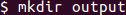
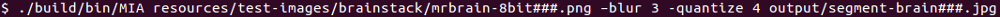

Converting and Segmenting a CT Scan Using MIA
Converting and Segmenting a CT Scan Using the MIA Application
-
To save your segmented scans in a new directory, you must first create the directory. To create the directory, run the following command in your terminal while in the location where you want the new directory.
mkdir <directory name>
-
Open the MIA application by running the following command in your terminal from the main project directory.
./build/bin/MIA
-
Find the first image you want to segment in the Image I/O panel on the right side of the Controls window.
-
Double click on the image. The name of the image should be in the "Image:" box.
-
Click on Load Canvas. You should see your scan in the MIA window.
-
To reduce noise, Blur the image by changing the Blur Amount to 3.0 and clicking on the "Blur" button.
-
To segment the image, change the number of Bins to 4 and click on the "Quantize" button.
-
Now, find the directory you created in the Image I/O panel and double click on it.
-
In the "Image:" box, enter a new name for your segmented image.
-
Click on Save Canvas. You should see your new image in the Image I/O panel.
-
Find the next image you want to segment in the Image I/O panel on the right side of the Controls window, and repeat steps 4-10 to segment the next image.
Converting and Segmenting a CT Scan Using the Terminal
-
To save your segmented scans in a new directory, you must first create the directory. To create the directory, run the following command in your terminal while in the location where you want the new directory.
mkdir <directory name>

-
While in the main project directory, run the following command to segment each image in a sequence that matches the naming scheme ###. (where ### is a three-digit number from 000 to 999)
./build/bin/MIA <path to input images> –blur 3 -quantize 4 <path to created output directory with new image names>

-
You will now find your segmented images in the directory you created.